Laser Research Group

NDepend Code Analyzing Tool
Summary
In this article, I will try to elaborate the NDepend code analyzing tool usage in Visual Studio environment in basics. I target the absolute beginners in code analysis just like myself. I will keep it simple by using a solid example through the document, from first installation to continuous usage, in order to help developers who wants to jump into the NDepend to discover more about it
Introduction
Lets assume we are dealing with a code stack that was not created by ourselves and we want to grasp it fully and quickly. Or we are creating a new team project in a way that we want it to be understandable and easily developable by any developer, making sure that any developer would follow the same set of rules which were predefined by ourselves.Of course, this would be very painful to organize since the case is dealing with projects having many different modules and assemblies that encompass a bunch of nested types and methods related some to other. We want to determine how complex the code is, how many types and assemblies there are, how many lines of code are we dealing with, or even how much the comment structure is used in the assemblies, and how the dependencies of the types and their methods are oriented. We want to make sure if there is a dependency cycle in our code etc.. NDepend is a code analyzing tool that makes all of this just by a single analysis with the auto generated reports and charts that answers all those questions in a very short time.
I would like to think of NDepend as a mirror-reflection image of a talking System.Reflection library of .NET framework in flesh and blood. It can actually talks to you about your assemblies, namespaces, methods, properties and fields, generates agile reports and charming charts for you about what is going on in your assembly. It communicates with you and the assembly via Code Query Language (CQL). What is more exciting is that it allows you to query and filter your assemblies, methods and fields, and define code rules that gives you the full control of the sub-components of your code pieces and their relations with each-other. Well, it does not set a property or invoke a method, which is why it is more like a mirror-image rather than the actual form in that metaphor. However, NDepent is a very useful and powerful code analyzing tool to control code quality, complexity, dependency, especially for huge assemblies.
Along with its own user interface, it comes with an extension manager that can integrate NDepend tools into VS 2010, 2012, 2013 and 2015 versions. Ndepend also can be integrated with build engines such as TeamCity and FinalBuilder.After installing NDepend VS extension, it creates an NDepend menu on the menu bar as well as in the context menu. There also will be a dime like icon on the right side of the status bar after installation, probably in the color of grey, if you have not performed any assembly analysis yet i.e. if there is not an .ndproj file and NDependOut folder generated in the project directory yet.
After the first analysis, it turns into a penny or a red spot, depending on how many default critical code rule your assembly is violated. Of course, NDepend allow you to modify those rules, even lets you define your own rules using CQL.
First Usage
All the NDepend tools reside in the menu bar. This little icon presents a first glance report of the assembly after the analysis result of code queries and rules summary, shows the violated rules according to default NDepend rule definitions, or to start a complete new analysis.
First Analysis
An analyze can be initiated either from the NDepend->Analyze menu or the shortcut icon. In the case of having analyzed assemblies already, they can be loaded from a folder or added to the solution to re-analyze or to compare with other results at will. We will implement both scenarios in this article. Lets assume we created or opened a solution that encompasses assemblies and we want to analyze them. As soon as the analyze is done, NDepend generates an .ndproj file, which can be used for future analysis and result comparations, and an NDependOut folder which includes the reporting source files and an report file in .html format in the project directory. If the Dashboard view is selected in the pop up options, the report will be looking like below:
All this information in the dashboard are generated according to the default code rules defined by NDepend via Code Query Language. The CQL is kind of cool because it allows you to navigate through your assembly by using SQL like queries. Lets take a close look to the Code Rules panel to see how the current rules are defined by NDepend. When we click any of the rule definitions or queries in the panel, the Queries and Rules Explorer is automatically opens.
Code Rules
In this explorer view, left panel represents the default rule groups of the project, and their subgroups if any. For example, in the image, our code seems to violate one or more of the rules or sub-rules of the ".NET Framework Usage" rule group. Keep in mind that if all of the rules or sub-rules are not satisfied, those warning signs are inevitable. For example, even tough our code satisfied the most of the code rule queries of the "System" sub-rule of the ".NET Framework Usage" rule group, the parent node shows a warning sign instead of a success color. This great feature allows us to create new project rules, or delete an existing one, or import any predefined rule in the .ndrules format from outside. Well, that is very cool feature because this enables developers to create a standard in writing code in common sense.
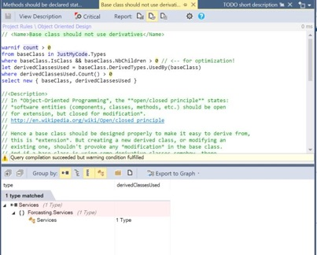
In the above image, the right panel of the explorer is for displaying the individual rules of a rule group. Here, we can create a new rule group that defines a set of new rules. Lets take a look at a defined rule. I will take a look at "Object Oriented Design" rule group and see the rule definition query of the "Base class should not use derivatives" rule. The code query is defined by NDepend in the following form. The query seems almost like a SQL query. Easy to read and handy to manipulate for reuse.
One of the most useful tool to determine the code architecture is Metric View. It is a great feature to visualize the code in such terms as line of code, complexity, line of comment etc. From the NDepend menu, there are several predefined options for relating the metric view properties of size of blocks and color to the parameters like complexity, code quality, lines of code, nesting depth and more.
Metric View
In the picture, the metric view is representing whole assembly in terms of methods. The largest rectangles separated by a yellow line represent the assemblies, in this example there are only two. As it can be seen from the dropdown lists on the top of the view, the metric view level is set to method mode, the size of the rectangles are representing the lines of code, and the color property of the metric is representing the cycloramic complexity. The tunable color meter is for setting the tolerance threshold that we want to use as limit. By changing the metric level from method to field, we can visualize the metric in terms of instance size and the methods and matching fields. We can change the visualize parameters to namespace, assembly etc. visualize the the relation of that variables with the rectangle size and the color metric. what is very attractive is we can play around with the query that search the assembly to create the metric view by hitting the edit query button which looks like below
from t in Application.Types
where t.CyclomaticComplexity >= 0 && !t.IsAbstract
orderby t.CyclomaticComplexity descending
select new { t, t.CyclomaticComplexity }
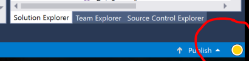
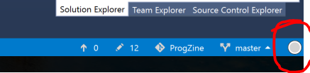
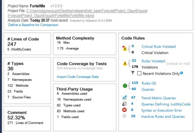
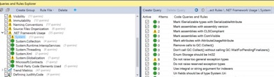
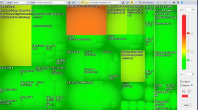
Dependency Matrix and Dependency Graph
Dependency matrix is, in my opinion, is one of the most useful tool of NDepend to analyze the inner structure of the assemblies. It provides a clear picture of what uses what in what extent. How the assemblies, classes, methods are related to each other. The dependency graph feature plays also the same role, which is very lucid visual tool showing who uses who, however, dependency matrix is much more elaborate and provides an user interface that enable user to track all dependencies from smallest segment of code to the largest. For instance, on the metric view, if a metric cell is right clicked, it can be visualized in dependency graph as below. The green color represents the passive interference, and the blue color represents the active interference.
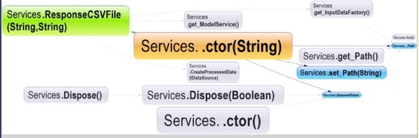
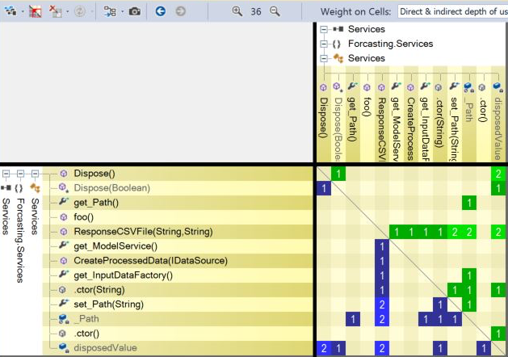
But dependency matrix provides more. The matrix interface is very flexible designed for detailing the dependencies in any level. Lets visualize the same metric view in dependency matrix as in right;
Dependency matrix is, in my opinion, is one of the most useful tool of NDepend to analyze the inner structure of the assemblies. It provides a clear picture of what uses what in what extent. How the assemblies, classes, methods are related to each other. The dependency graph feature plays also the same role, which is very lucid visual graps showing who uses who, however, dependency matrix is much more elaborate and provides an user interface that enable user to track all dependencies from smallest segments of code to the largest.
To read the matrix over the column values is always easier to me. Because the green color represents the any method or field on column that is used by the row while the blue color represents the method or field that is used by the column. The number represents the indirect dependency order. That is to say that if the number is 1, the row and the column are directly dependent, if the number is 3, the modules are dependent each other via at least 2 intermediary module. If we expand the nodes, interdependencies of all members of the assembly can be read easily.
In the example above, the black box with the number 5 means that the nested type in the column and the property in the row are displaying a dependency cycle which means they use each other indirectly via at least 4 intermediary element. Left click to that dependency shows the relationship on a dependency graph. Or we can open this dependent cycle in matrix form by right clicking. The light blue colored box in graph represents an indirect dependency. In this case, because the property in the row plays the role of creating the instance of the nested type in the column, and they both are part of the same higher class which is the main class of this framework, this dependency cycle is expected
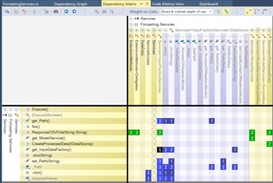
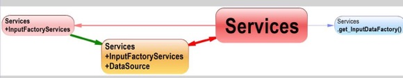
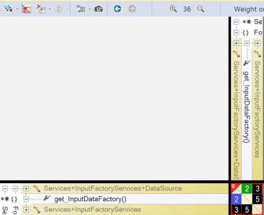
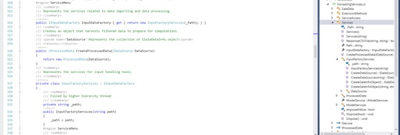
Conclusion
NDepend is a developer friendly code analyzing tool that provides lucid visual tools and auto generated reports.The control ability over the details of the code rules with the interference of code query language is one of the most intriguing features of NDepend among many. It can help fresh developers to improve their code creation abilities. It can be quite handy for deciphering huge and complex assemblies. NDepend is a prepaid tool but not for students. NDepend provides license for students at no cost.
Acknowledgement
I am obliged to thank NDepend and Mr. Patrick Smacchia for supporting students by providing license for this useful tool at no cost.
About the Author
Olgun Erguzel, MSC
Istanbul Technical University,
Physics Engineering Department,
Laser Research Group
+905300152123